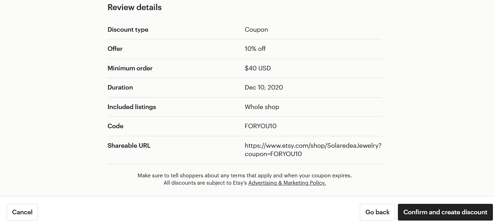
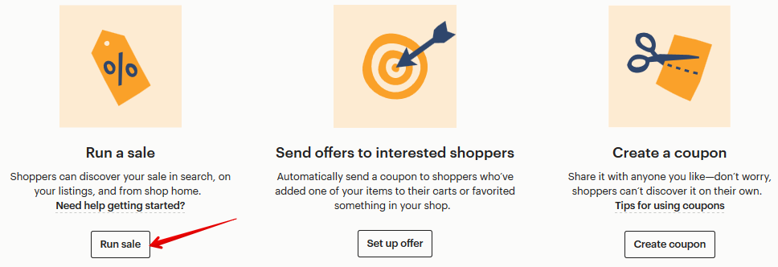
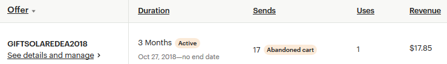

Задаём условия действия купона:
• Тип скидки или «I’d like to offer shoppers» — может быть трех видов: про-
цент от текущей цены (Percentage off) от 10 до 90%, конкретная сумма
(Fixed amount off) или бесплатная доставка (Free shipping).
• Минимальный размер заказа или «Minimum order to qualify» — укажите
сумму заказа (Order total) или количество товаров (Quantity), начиная с
которых купон будет действовать. Выберите None, если хотите, чтобы
купон действовал на любые покупки в магазине
• Отправить купон покупателям после любой покупки или «Send as a
thank you»
• Срок действия или «Duration». Если купон бессрочный, то поставьте га-
лочку «No end data»
• Название купона или «Customize your coupon code» — вводится без про-
белов, только цифры и буквы, все символы автоматически становятся
заглавными.


Под полем с названием купона есть ссылка, которую можно отправить покупа-
телю – и его купон автоматически применится при оплате.
Если выбрать тип скидки Percentage off (то есть скидка в процентах) и Minimum
order – None, то будет доступен дополнительный шаг Choose listings for discount,
на котором можно выбрать листинги, участвующие в акции.
На этом шаге нужные листинги можно выбрать двумя способами:
• Указать секцию магазина (Add multiple listings)
• Найти листинг по названию (Search for a single listing)
Чтобы исключить товар, нажмите крестик в правой части нужной строки.


На последнем шаге проверьте параметры купона. Если всё верно – нажимайте
кнопку Confirm and create discount. Готово!
После того, как купон создан, вы можете предложить его своим клиентам. Ука-
жите о возможности скидок в Announcement, а также в описании нужных ли-
стингов, поощряйте текущих клиентов и привлекайте новых через соцсети.
Удалить купон нельзя. Но можно остановить его действие. Для этого кликните
на название нужного купона, после чего нажмите кнопку Deactivate coupon.
Можно ли сделать купон на конкретный товар или секцию
Да, вы можете создать купон на скидку, который будет действовать только на
конкретные товары.
Для этого в параметрах купона укажите тип скидки Percentage off (скидка в про-
центах) и Minimum order – None. На следующем шаге выберите товары, которые
участвуют в акции.
Других вариантов создать купон для конкретного товара на Etsy пока нет.
Можно ли создать купон для конкретного покупателя
Технически это сделать нельзя (чтобы им мог воспользоваться только один кон-
кретный человек).
Но вы можете создать новый купон (например, с именем покупателя) и отпра-
вить его клиенту через личные сообщения.
Сколько раз можно воспользоваться купоном
Это количество не ограничено. Если вы хотите, чтобы скидкой можно было вос-
пользоваться лишь раз, тогда придётся отслеживать это и вручную деактивиро-
вать «использованный» купон.
Может ли покупатель воспользоваться сразу несколькими ку-
понами
При покупке в корзине можно ввести только один скидочный купон. Поэтому
покупателю нужно выбрать тот, который выгоднее.
Единственный вариант, когда две акции могут суммироваться – бесплатная до-
ставка и скидка.
Купон со скидкой в процентах действует только на товар или
товар+доставка
«Процентный» купон действует только на стоимость товара. Стоимость до-
ставки останется неизменной.


Как сделать скидку за отличный отзыв
Если покупатель оставил вам отличный отзыв, вы можете не только поблагода-
рить его, но и отправить купон на скидку.
Для этого создайте новый купон и отправьте покупателю вместе в благодар-
ственным текстом в личном сообщении.
Как сделать купон для акции BUY 2 GET 1 FREE
На Etsy нет технической возможности создать купон с такими условиями.
Выйти из положения можно двумя способами:
1. Если у вас товары примерно равны по стоимости, то создайте купон на
скидку 33% (Percentage off). И укажите в поле Quantity, что им можно вос-
пользоваться только при покупке от 2-х товаров.
2. Просить покупателя при заказе 2-х товаров указать в комментарии к за-
казу, какой 3-й товар он хочет получить бесплатно.
Как провести распродажу товаров
Чтобы провести распродажу, нужно перейти в раздел Shop Manager – Marketing
– Sales and coupons. После чего нажать кнопку New special offer.
Далее выбрать пункт Run sale.
На втором шаге нужно выбрать основные параметры распродажи:
• Тип скидки или «I’d like to offer shoppers» — процент от текущей цены
(Percentage off) от 10 до 70% или бесплатную доставку (Free standard
shipping)
• Покупатели из какой страны увидят скидку или «Where is this offer valid»:
нужно выбрать определенную страну или указать Everywhere, если рас-
продажа действует по всему миру.
• Минимальный размер заказа или «Minimum order to qualify»: None, если
скидка действует на все покупки в магазине, Quantity – скидка дей-
ствует при заказе определенного количества товаров, Order total –
сумма заказа, начиная с которой действует скидка
• Срок действия или «Duration». Распродажу, в отличие от купона, нельзя
сделать бессрочной (единственное исключение – бесплатная доставка)
• Особые условия распродажи или «Terms and conditions» – если у акции
есть особенные условия, то их нужно указать здесь, чтобы покупатели
были в курсе (этот текст показываются в начале описания товара).
Можно ничего не указывать.
• Название распродажи или «Name your sale» — вводится без пробелов,
только цифры и буквы, все символы автоматически становятся заглав-
ными. Это название видите только вы.

Если в пункте «Minimum order to qualify» выбрать None, то станет доступен ещё
один шаг – выбор товаров (Choose listings for discount), на которые распростра-
няется скидка. Варианты Quantity и Order total такой возможности не предостав-
ляют.
На шаге Choose listings for discount нужные листинги можно выбрать двумя спо-
собами:
• Указать секцию магазина (Add multiple listings)
• Найти листинг по названию (Search for a single listing)


Если вы хотите исключить какой-то товар, то нажмите крестик в правой части
нужной строки.
На последнем шаге нужно перепроверить условия действия распродажи. Если
всё верно – нажимайте Confirm and create discount.
Как предложить бесплатную доставку при заказе от XX дол-
ларов
Для этого необходимо создать распродажу Run a sale.


Выберите в графе I’d like to offer shoppers вариант Free standard shipping. А чуть
ниже в Order total укажите сумму заказа, начиная с которой вы предлагаете бес-
платную доставку.
Что такое купоны Abandoned Cart
На Etsy также есть специальные купоны, которые площадка отправляет покупа-
телю на электронную почту.
Один из вариантов таких купонов — это купоны Abandoned Cart.
Etsy отправят купон со скидкой тому покупателю, кто добавил ваш товар в кор-
зину, но не оплатил его в течение 24 часов.
Чтобы его создать, перейдите на страницу Marketing – Sales and coupons и
нажмите кнопку New special offer. Затем Set up offer.
Здесь есть 4 параметра настройки рекламной кампании:
• Who would you like to send this offer to – кому отправлять спец.
предложение, выбираем Abandond cart shoppers


• What type of coupon – тип купона (Percent off – скидка в процентах от 10
до 90; Fixed amount off – скидка в долларах, от 1 USD; Free standard ship-
ping – бесплатная доставка; Use an existing coupon – выбрать один из су-
ществующих купонов)
• Choose a coupon code – название купона, который нужно ввести покупа-
телю при оплате заказа
Эффективность рекламы Abandoned Cart можно посмотреть на странице Sales
and Coupons.
Здесь видно, сколько писем отправлено за выбранный период времени (Sends
– 17 писем), сколько человек воспользовались купоном (Uses – 1 человек) и
какую прибыль он принёс (Revenue – $17.85).
Если нажать на название купона, то вы попадёте в его настройки. Здесь можно:
• приостановить отправку купонов – кто их уже получил смогут ими вос-
пользоваться (Stop sending offers)
• деактивировать купон – он больше не будет отправляться, а уже отправ-
ленные купоны действовать больше не будут (Deactivate coupon)